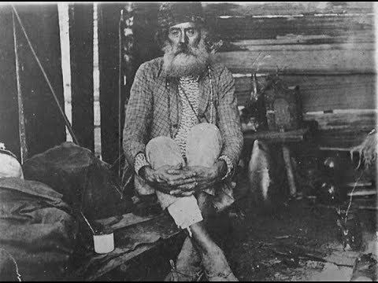

Os 3 monges
João Maria é o nome pelo qual ficaram conhecidos três monges (João Maria D’Agostini, João Maria de Jesus e José Maria de Santo Agostinho), que passaram pela região sul do Brasil entre o final do século XIX e primeira metade do XX.
Tinham o caráter de curandeirismo ou de messianismo. O povo os uniu reconhecendo-os como um só: São João Maria, o monge dos excluídos. São João Maria não apenas é visto como um santo, por vários sujeitos e comunidades de distintas religiosidades, como esteve na cidade de Clevelândia e boa parte do território paranaense.
Foi notória sua presença praticando aconselhamentos, orações, benzimentos, processos de cura através dos olhos d’água e do barro e realizando profecias. É importante entender que a igreja católica não reconhecia a doutrina do Monge, porque diferentemente dos padres que rezavam as missas em latim o Monge não fazia o mesmo. Com isso a própria população conseguia acompanhar o então catolicismo popular do Monge, outra característica desse catolicismo é que ele também não cobrava valor algum para realizar batizados e casamentos.
A História do Monge São João Maria faz parte da História do Paraná e nos últimos anos vem conquistando romeiros e devotos, que participam do turismo religioso e, por vezes, ecológico, ofertado por diferentes municípios, tais como: Lapa, Rebouças, Mangueirinha e, porque não, Clevelândia.
Maralice Maschio é doutora em história e professora da FAMA e Carlos Frederico Branco é mestre em história e pesquisador. O monge João Maria, personagem da história e da religiosidade clevelandense
Siga-nos das redes sociais: